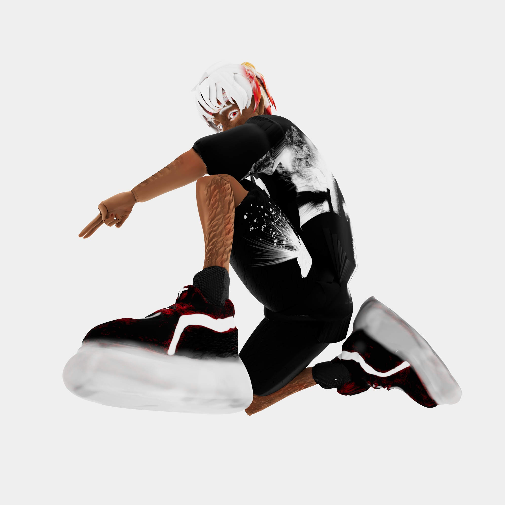

01 / Sculpt, topology and UVs
Building a
usable mesh.
After sculpting in ZBrush, I rebuilt the asymmetrical character in Maya. The eyes, ears, hands and spaces between the fingers required particularly careful retopology. I reduced the heavy sculpt with ZBrush Decimation Master to keep the Maya workflow manageable, cleaned up n-gons and non-manifold geometry, then planned flatter UV islands for the graphics on the T-shirt.
